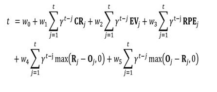

“Hawking” by Ottaviani & Myrick takes you on an incredible true life story of Stephen Hawking. The book starts off with Hawking in his teen years, he enjoyed chemistry at the time. He was living with his mom Isobel Hawking and his dad Frank Hawking during those years. Fast forward a little bit, Stephen was about 21, starting college. He went to Cambridge University. But a couple years later after he was accepted into Cambridge, Hawking was diagnosed with motor neurone disease. That then led to a few years of depression for Hawking. The doctors told him he would only have two years to live. Hawking then decided to marry Jane Beryl Wilde, a person he liked at Cambridge. They stayed married for 25 years, until they divorce around their 25th anniversary. Hawking later on married Elaine Mason, but also divorce. Jane supported Hawking through those years.They also had two kids, they call Mary and Philippa. Over those years the Hawking family moved around in their home land of England. They also travel around a lot too, they went to Universities in England, America and Russia, to talk about Hawking’s theory about the universe. But during a university trip to Switzerland, Hawking sickness took a turn and he had to go to the hospital. That's where Jane had to make a hard choice, let Hawking die or let him live but be unable to talk. She chose the second option, that's how Hawking got his robot voice. He continued to live on with his life, just with a robot voice. Later on he wrote a couple more books, “A Brief History of Time” to name one. Hawking kept on doing this until his motor neurone disease caught up to him and end his wonderful life on March 14 2018.
If someone asks me to score this book on a scale from 1 to 10, I would give this book a solid 8.5 because the art style fits the book perfectly and the writing style used is brilliant. What they did with the writing was highlighted words and changed the font style to show the motor neurone disease affecting Hawking speech patterns. Creating a visual way to see how Hawking talked to people around him. The theme is also encouraging because Hawking is basically getting dealt the most terrible cards in the deck, but that doesn’t stop him from his passion for solving the most colossal question for the human race. This theme of not giving into the pain life gives us connects more than ever to are society because wherever you turn your always going to see some type of dreadful news report about are crummy things happening in the world. That makes you wonder why does life suck? Hawking's theme explains that any type of bad deal in life, direct or indirect shouldn't affect your passion in life. Furthermore, the only reason I wouldn’t give this book a 10 out of 10 is because the books math is confusing at times and doesn’t explain how they function. For example:
This is one of the equations used in the book, the book kind of explains what it is but was still confusing to understand. I believe if the book explain stuff like this more, it would allow the reader to better understand who Hawking was. Overall, A wonderful book to read, especially if you enjoy science and math, and if you like knowing how important and famous people became who they are. Anyway, this book was very enjoyable to read.